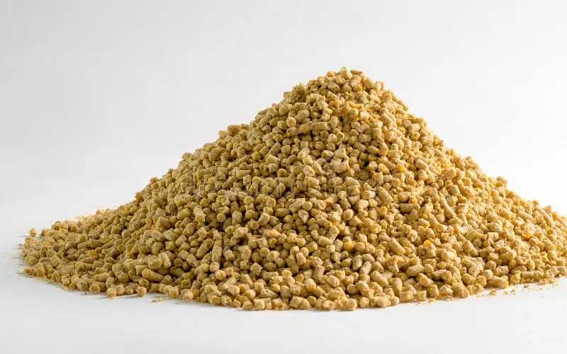
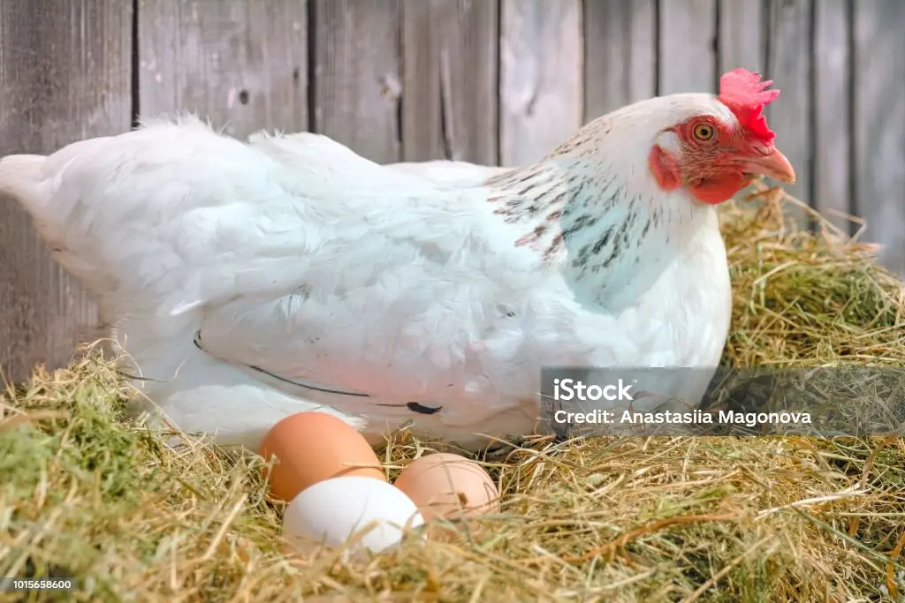
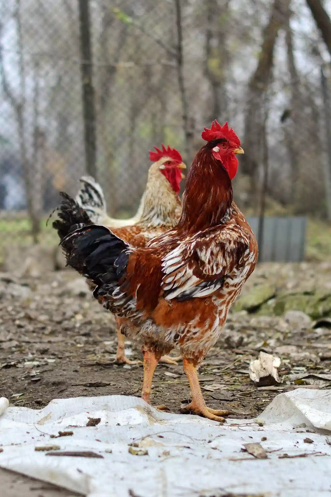

Broiler Feed
Feed designed to support fast growth and efficient weight gain in meat-producing chickens.
Learn more
Practical Poultry Feeding Guide
Learn how to choose poultry feed, understand feeding stages, manage feed costs, and support healthy bird growth.
Explore Feed TypesFeeding is one of the most important parts of successful poultry production. The right feed at the right stage can support healthy growth, good egg production, and better farm performance.
This guide provides simple information for poultry farmers and beginners who want to understand poultry feed and make better feeding decisions.

Feed designed to support fast growth and efficient weight gain in meat-producing chickens.
Learn more

Feed for growing cockerels with attention to healthy development and economical feeding.
Learn moreExplore our feed guide to learn about different feed types, ingredients, feeding stages, and practical ways to manage costs.
View the Feed Guide